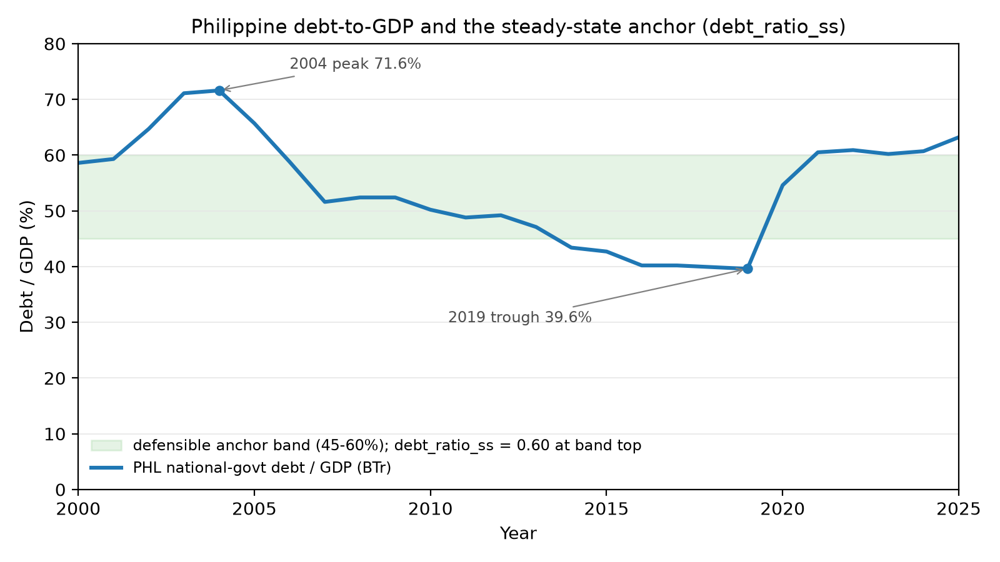

Calibration of Macroeconomic Parameters#
Economic Assumptions#
As the default rate of labor augmenting technological change, \(g_y\), we use a value of 3.6%. The average annual growth rate in GDP per capita in the Philippines between 2000 and 2019 is 3.6% per year. The pre-pandemic window is used deliberately to avoid COVID-era volatility distorting the steady-state productivity target.
Open Economy Parameters#
Foreign holding of government debt in the initial period#
The path of foreign holding of domestic debt is endogenous, but the initial period stock of debt held by foreign investors is exogenous. We set this parameter, initial_foreign_debt_ratio, to 0.2, based on the Bureau of the Treasury (BTr) Debt Indicator report for Q4 2025 (source).
Foreign purchases of newly issued debt#
We set \(\zeta_D = 0.2\). This is calibrated to equal initial_foreign_debt_ratio above, on the assumption that the foreign share of newly issued debt matches the foreign share of the existing stock.
Foreign holdings of excess capital#
We set \(\zeta_K = 0.4\). This parameter governs the share of the gap between domestically-supplied capital and the capital demanded at the world interest rate that foreign investors fill, so it is effectively the degree of openness of the capital account. It is harder to pin down from the data than the debt parameters, because purchases of “excess” capital demand are not directly measured. We anchor the value to the normalized Chinn-Ito capital-account openness index for the Philippines, which sits at roughly 0.4 (Chinn-Ito index). This is also consistent with the imperfect international capital mobility implied by Feldstein-Horioka-style saving-investment correlations, and with the Bangko Sentral ng Pilipinas International Investment Position, which shows foreign-owned capital at roughly 20% of the stock — far below the ~96% that the earlier placeholder of 0.9 implied.
It also restores a domestic-capital buffer the transition needs: at \(\zeta_K = 0.9\) domestic capital (\(K_d = B - D_d\)) is only ~4% of the stock, so the \(K_d \geq 0\) constraint binds along the path and the resource constraint fails to close; at 0.4 it clears.
World interest rate#
The small-open-economy block prices foreign capital and foreign debt at an exogenous world interest rate, world_int_rate_annual. We set it to 5% — a global risk-free rate of about 4% plus a Philippine country-risk premium of roughly 100 basis points, the Philippines being an investment-grade (BBB) sovereign. The previous 4% placeholder omits this premium, understating the supply price of foreign capital and so overstating foreign ownership of the capital stock.
Government Debt, Spending and Transfers#
Government Debt#
The path of government debt is endogenous. But the initial value is exogenous. To avoid converting between model units and dollars, we calibrate the initial debt to GDP ratio, rather than the dollar value of the debt. This is the model parameter \(\alpha_D\). We compute this from the ratio of publicly held debt outstanding to GDP. Based on a 2024Q1 report from Treasury the value is 0.60.
We also set the long-run (steady-state) debt-to-GDP target, debt_ratio_ss, to 0.60, matching the initial ratio rather than the 1.10 US-style placeholder inherited from OG-Core. This keeps the fiscal closure consistent with the Philippine debt position at both ends of the transition.
{kind=link}

Fig. 1 Philippine national-government debt-to-GDP, 2000–2025 (Bureau of the Treasury). debt_ratio_ss is calibrated to 0.60 — at the MTFF 60% soft ceiling and equal to the current stance, within the ~45–60% band implied by the IMF general-government measure (~57%), the MTFF target, and the World Bank’s prudence range. It replaces the inherited 1.10 US-style placeholder, which sat above the entire historical range (2004 peak 71.6%; 2019 trough 39.6%). The lower anchor also shrinks the share of household saving absorbed by government debt, easing the crowding-out that had inflated the foreign-owned capital share.#
Aggregate transfers#
Aggregate (non-Social Security) transfers to households are set as a share of GDP with the parameter \(\alpha_T\). We exclude Social Security from transfers since it is modeled specifically. We set \(\alpha_T = [0.0448]\) (4.48%) using World Bank World Development Indicators data for 2023. The value is computed as the product of total government expense as a share of GDP (WDI series GC.XPN.TOTL.GD.ZS) and the share of that expense classified as subsidies and other transfers.
Government expenditures#
Government spending on goods and services is set as a share of GDP with the parameter \(\alpha_G\). We define government spending as:
Government interest rate wedge#
The interest rate the government pays on its debt, \(r_{gov,t}\), generally differs from the household interest rate \(r_t\) — sovereigns often borrow at lower rates than the private market because they are seen as safer borrowers, but the spread also widens with the debt burden. OG-Core captures both through:
Level wedge. \(r_{gov,scale} = 0.245\) and a base shift of \(-0.0338\), calibrated from Philippine sovereign-vs-corporate yield data sourced from the IMF, following Li, Magud, Werner, and Witte (2021), The Long-Run Impact of Sovereign Yields on Corporate Yields in Emerging Markets (IMF WP/21/155). Enabling the debt-elastic premium below recenters the stored r_gov_shift to \(-0.0482\).
Debt-elastic premium. The \(r_{gov,DY}\) and \(r_{gov,DY2}\) terms let the sovereign rate rise with the debt ratio — the crowding-out-via-risk channel that OG-Core and the sister country models leave off (otherwise a debt-financed reform raises debt with no feedback to borrowing cost). It is the Schmitt-Grohé and Uribe (2003) premium in convex (quadratic) form, following the fiscal-limits literature (Bi 2012; Ghosh et al. 2013). OG-PHL uses a centered form, \(r_{gov,DY2}\,(D_t/Y_t - 0.6)^2\) — flat at the 0.60 target and steepening only as debt rises away — matching the country’s stable spreads at 40–70% debt and stress only at 1980s-crisis levels. We set \(r_{gov,DY2} = 0.04\) (so \(r_{gov,DY} = -0.048\), with r_gov_shift recentered to \(-0.0482\)), which holds the steady state fixed and adds ~36 bp at \(D/Y = 0.9\) and ~144 bp at 1.2 — within the emerging-market spread-to-debt range (Jaramillo and Weber 2012). A conservative \(r_{gov,DY2} = 0.02\) is a reasonable alternative.
Centering is what makes the premium usable along the transition. The multi-industry baseline debt path overshoots to about 1.3 times GDP early in the fiscal-adjustment window (period \(t_{G1}\)) before returning to 0.60, and the centered premium prices that overshoot at a plausible peak sovereign rate near 7.8%. A premium that bit at the target (vertex at zero debt) would instead compound the overshoot into a runaway debt-service feedback — toward ~1.7 and a ~16% rate. It is enabled by default.